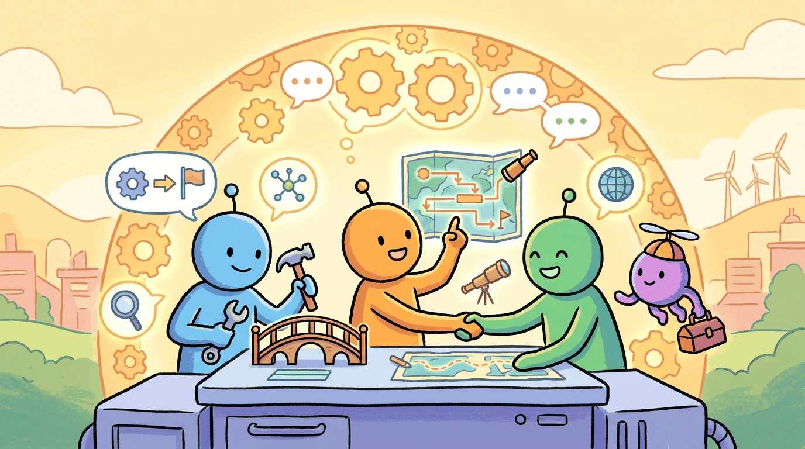

"We build our tools, and then our tools build us."
Marshall McLuhan
Part Overview
Part VI covers the complete landscape of agentic AI: from single-agent foundations through multi-agent orchestration to specialized agents and production safety. You will build agents that perceive, reason, and act autonomously; connect them to tools and external systems through standardized protocols; compose them into multi-agent teams; specialize them for code generation, web automation, and domain-specific tasks; and deploy them safely into production with observability, testing, and cost controls.
Chapters: 5 (Chapters 22 through 26). These chapters draw on every preceding part and prepare you for the application, evaluation, and production topics that follow.
Moving beyond single-turn question answering, Part VI covers the rapidly evolving field of AI agents: systems that plan, use tools, collaborate with other agents, and take actions in the real world. This part connects everything you have learned so far into autonomous, production-ready systems.
The agent paradigm, memory systems, planning, reasoning models, and agent evaluation benchmarks.
Function calling across providers, MCP, A2A protocol, custom tool design, and agentic RAG.
Framework landscape, architecture patterns, communication, state management, and human-in-the-loop agent systems.
Code generation agents, browser agents, computer use agents, research agents, and domain-specific agent design patterns.
Agent safety, sandboxed execution, production observability, error recovery, and testing multi-agent systems.
- 25.1 Agent Safety & Prompt Injection Defense
- 25.2 Sandboxed Execution Environments
- 25.3 Production Observability & Cost Control
- 25.4 Error Recovery, Resilience & Graceful Degradation
- 25.5 Testing Multi-Agent Systems
- 25.6 Agentic Security Benchmarks for Tool-Using Systems
- 25.7 Supply-Chain Security for Agent Sandboxes